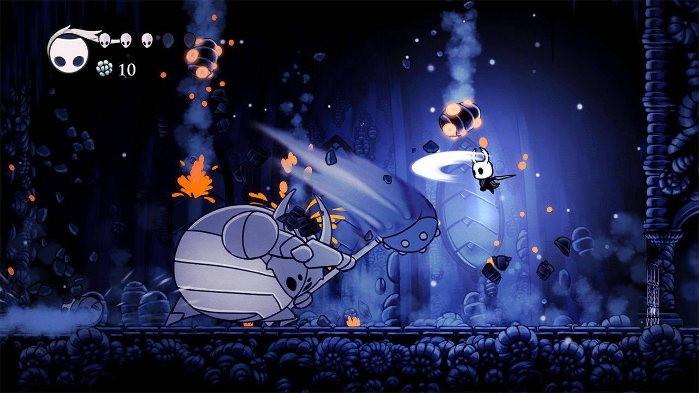
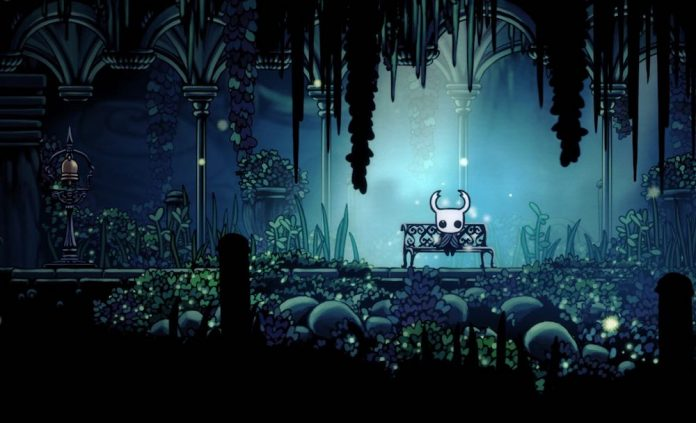

HOLLOW KNIGHT

Desciende a la oscuridad
Debajo de la desvanecida ciudad de Dirtmouth se encuentra un vasto y antiguo reino. Muchos están atraídos debajo de la superficie, en busca de riquezas, gloria o respuestas a viejos secretos. Como el enigmático Caballero, atravesarás las profundidades, desentrañarás sus misterios y conquistarás sus males.
Use sus habilidades y reflejos para sobrevivir 
Hollow Knight es una desafiante aventura de acción en 2D. Explorarás cavernas sinuosas, lucharás contra criaturas contaminadas y escaparás de intrincadas trampas, todo para resolver un antiguo misterio oculto durante mucho tiempo.
* Explore mundos vastos e interconectados
* Encuentra una extraña colección de amigos y enemigos.
* Evoluciona con nuevas y poderosas habilidades y habilidades.
Arte evocador dibujado a mano 
El mundo de Hollow Knight cobra vida con detalles vívidos y cambiantes, sus cavernas llenas de criaturas extrañas y aterradoras, cada una animada a mano en un estilo 2D tradicional.
Cada nueva área que descubrirás es maravillosamente única y extraña, repleta de nuevas criaturas y personajes por descubrir. Vale la pena explorar el mundo de Hollow Knight solo para disfrutar de las vistas y descubrir nuevas maravillas escondidas fuera de los caminos trillados.